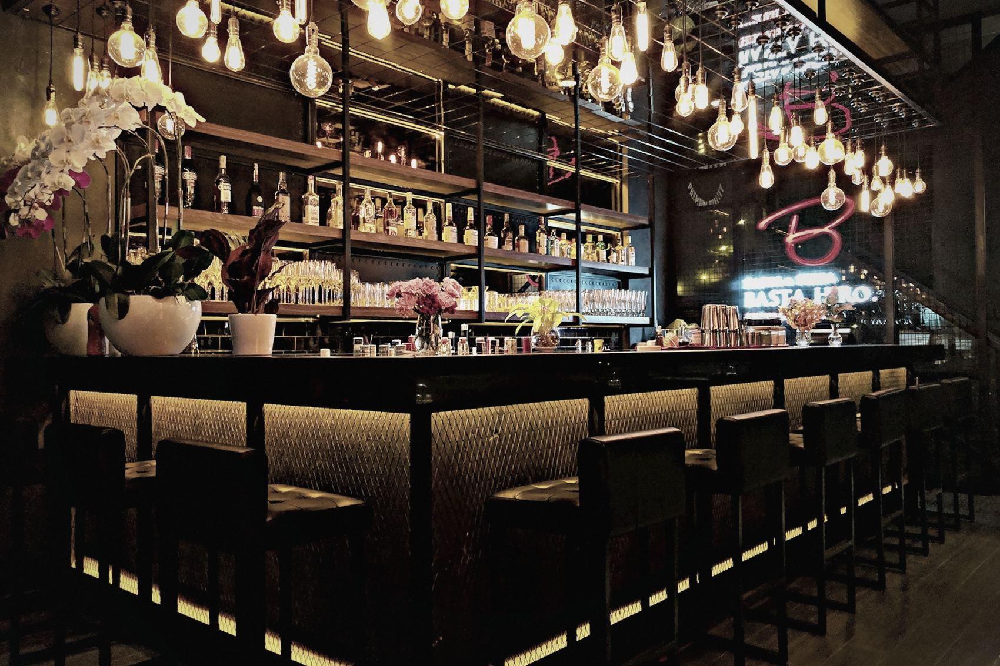
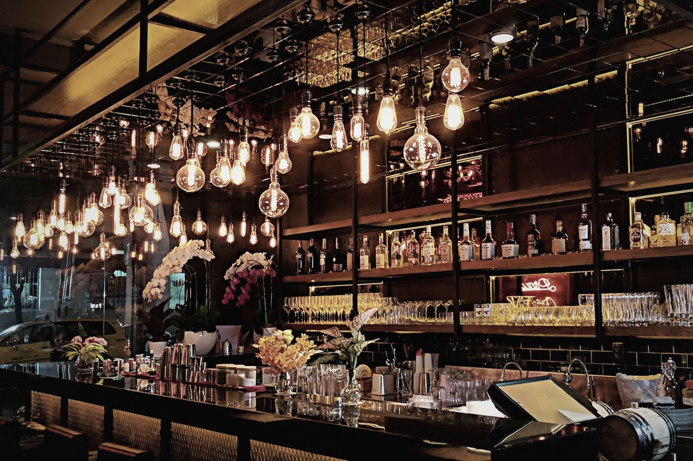
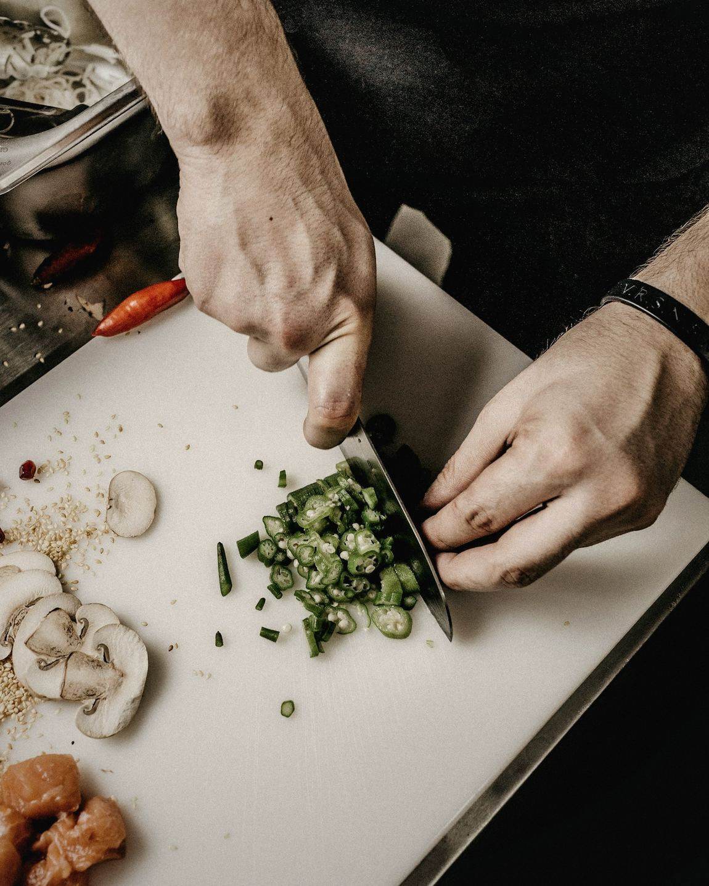
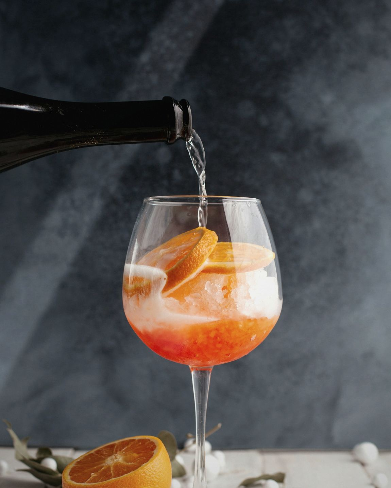
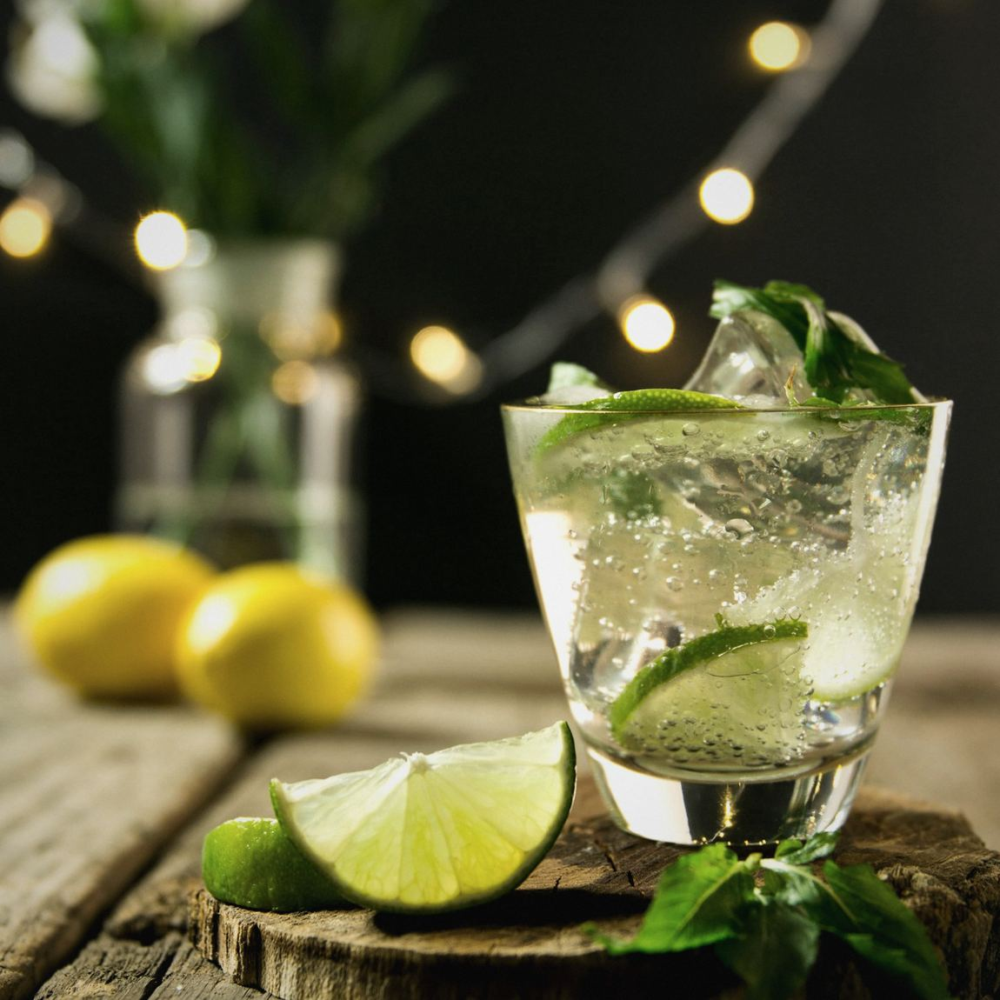

Un bar de 1962, garé chez vous.
Volkswagen T1 aménagé en comptoir. Avec une équipe derrière, ou vide pour votre propre mise en scène.
Trois façons de l'utiliser.
Le même châssis, trois aménagements. On monte la veille, on repart le lendemain.



-
Le bar
Le flanc s'ouvre, le comptoir se déplie, deux personnes servent en même temps. C'est la configuration la plus demandée, et celle qui vide le plus vite une file d'attente.
Tireuse 2 becs120 services / heureBac à glace 40 LÉvier et eau claire -
Le traiteur
Plan réfrigéré, passe ouvert vers l'extérieur, rangement bas. Votre traiteur travaille dedans sans courir jusqu'à une cuisine à quarante mètres.
Froid positif 90 LPlan inox 1,4 mPasse latéral220 V / 16 A -
La coquille nue
Tout sort. Il reste le plancher bois, les vitres d'origine et une alimentation. C'est la version que prennent les scénographes, les DJ et les marques.
4,2 m²Hauteur 1,45 mDeux prises 220 VSans habillage
Ce qui sort du comptoir.
Six cocktails à la carte, dont deux sans alcool qu'on n'a pas bâclés. Bière pression, vins de trois vignerons qu'on connaît.
Ce qui va autour.
De quoi asseoir soixante personnes sans qu'un seul meuble jure avec le combi. Livré, monté, repris.
S'asseoir
- Tables de ferme, chêne8
- Bancs bois brut, 2 m16
- Tabourets de bar, noyer12
- Mange-debout, tôle noire10
Éclairer
- Guirlandes guinguette60 m
- Photophores verre fumé40
- Parasols toile écrue4
- Groupe électrogène silencieux1
Servir
- Verrerie, service complet200
- Comptoirs d'appoint2
- Seaux à glace zinc6
- Vaisselle réutilisable150
Et quelqu'un derrière le comptoir.
Un barman, deux au-delà de cent invités. Ils arrivent avec leur carte ou travaillent la vôtre. Pour la musique, deux DJ qu'on connaît bien et qu'on vous présente sans commission.

En service.


Ils l'ont fait venir.
« On craignait le gadget. C'est la seule chose que tout le monde a photographiée. »
« Cent quarante personnes, deux heures de service, jamais plus de trois au comptoir. »
« On l'a pris vide, platine dedans, portes arrière ouvertes. Ça a fait la scène tout seul. »
Dites-nous où, et quand.
Réponse chiffrée sous 48 heures, ou un appel si c'est plus simple.